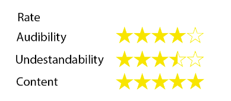

<ion-view view-title="Profile">
    <ion-content ng-class="{expanded:isExpanded}" class="animate-fade-slide-in">

        <br>
        <div class="content">
            <center>
            <div class="avatar" style="background-image: url('img/profile.png');"></div><br>
            </center>
            <center>
                <h2>Malith Senaweera</h2>
            </center>
        </div>
        
        

<p class="tab"> <h3> Review </h3></p>

        <div class="card">
          <div class="item item-text-wrap">
            Malith is a great tutor. He can explain complex theories well. -- Kasun
          </div>
          <div class="item item-text-wrap">
            The greatest point of Malith's are his smart examples. They make very easy to understand. -- Pasindu
          </div>
          <div class="item item-text-wrap">
            I was surprised by the mediocore teaching ability of Mr.Senaweera. I wonder how he got such high seek ratings. -- Upeksha
          </div>
        </div>

        <center>
        <button class="button button-positive">
            Request
        </button>
        </center>

    </ion-content>
</ion-view>
